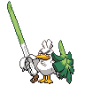

Sirfetch’d appears on 5 of 2374 Pokémon Champions VGC tournament teams in the backtwo archive (0% usage, Reg M-C). The most common item is Leek (60% of Sirfetch’d sets) and the most common ability is Scrappy. Its most frequent teammate is Golisopod-Mega (60% of its teams).
Open Sirfetch’d in the full app →| Team | Player | Event | Result | Reg | Date |
|---|---|---|---|---|---|
| espertcg's Baltimore Regional Challenge Top 16 Team | espertcg | Baltimore Regional Challenge | 9th | M-C | 19 Sep 2026 |
| Peter's Salamence Dragapult Team | Peter Chen | - | — | M-C | 16 Sep 2026 |
| KKCWind's Golisopod Sirfetch'd Team | Huang Yang-Jie | Grassroots Local Tour | Top 8 | M-C | 14 Sep 2026 |
| Trick Room's Salamence Sirfetch'd Team | Trick Room | - | — | M-C | 11 Sep 2026 |
| shiyo_ootori's Golisopod Blastoise Team | shiyo_ootori | - | — | M-C | 10 Sep 2026 |
Already running Sirfetch’d and want the rest of the six? The team finder takes the Pokémon you have and ranks every tournament team by how many of your picks it matches. Or run the numbers in the damage calculator — Champions-accurate, with Mega Evolution, Stat Points, weather, terrain and spread reduction.